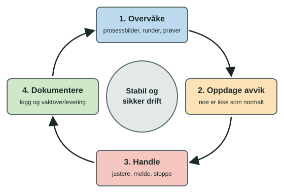

Hva er drift?
Et prosessanlegg lager ikke produkter av seg selv. Noen må starte det, følge med på det, rette opp når noe går galt og stoppe det trygt. Dette arbeidet kalles drift, og det er hovedjobben din som prosessoperatør.
Drift: å holde produksjonen i gang
Drift er alt arbeidet som skal til for å holde produksjonen i et anlegg i gang. Den som gjør dette arbeidet, kalles prosessoperatør eller bare operatør.
Et anlegg i god drift skal nå fem mål på en gang:
- Sikkerhet: Ingen skal bli skadet, og det skal ikke bli brann, eksplosjon eller utslipp.
- Miljø: Utslipp til luft og vann skal holdes innenfor grensene i utslippstillatelsen.
- Kvalitet: Produktet skal ha den kvaliteten kunden har bestilt.
- Mengde: Anlegget skal lage den mengden som er planlagt, og helst ikke stoppe uten plan.
- Kostnad: Råstoff, energi og tid skal brukes uten unødig sløsing.
Rekkefølgen er ikke tilfeldig. Noen ganger kan ikke alle målene nås samtidig. Da går sikkerhet og miljø foran kvalitet og mengde. Det er bedre å stoppe et anlegg enn å kjøre det på en farlig måte.
Drift og vedlikehold: to jobber som henger sammen
Drift og vedlikehold er ikke det samme. Drift er å kjøre anlegget. Vedlikehold er å holde utstyret i god stand, og å reparere det når det svikter. Det gjør ofte mekanikere, elektrikere og automatikere.
De to jobbene er avhengige av hverandre:
- Operatøren er i anlegget hver dag og er ofte den første som merker at en pumpe lager ny lyd, eller at en pakning lekker. Operatøren melder fra, slik at feilen kan rettes før den blir stor.
- Før vedlikeholdet kan begynne, må operatøren gjøre utstyret klart: stoppe det, tømme og trykkavlaste det, og sikre det mot at det blir startet med lås og merk. Etterpå tar operatøren utstyret i drift igjen.
Du lærer mer om dette i emnet Vedlikehold senere i dette temaet.
Operatørens to arbeidsplasser
En operatør jobber både i kontrollrommet og ute i anlegget.
I kontrollrommet følger operatøren med på hele anlegget på skjermer. Prosessbildene viser temperaturer, trykk, nivåer og mengder. Når noe går utenfor grensene, kommer det en alarm. Fra kontrollrommet kan operatøren endre settpunkter, starte og stoppe pumper og åpne og stenge ventiler. Hvordan prosessbildene og alarmene fungerer, lærer du i Operatørbilder og alarmer.
Ute i anlegget går operatøren faste runder. Skjermene viser bare det som blir målt. Mye av det som er i ferd med å gå galt, merker du best med egne sanser:
- Se: lekkasjer, drypp, rust, damp eller røyk, og lokale målere som viser noe uvanlig
- Lytte: nye lyder fra pumper, motorer og ventiler, for eksempel hvining, banking eller skraping
- Lukte: lukt av kjemikalier, gass eller noe som er varmt eller brent
- Kjenne: vibrasjoner, eller at et lager eller en motor er varmere enn vanlig (kjenn forsiktig, eller bruk et måleinstrument)
På runden tar operatøren ofte også prøver, som laboratoriet analyserer, og fyller på hjelpestoffer som olje og kjemikalier.
Driftssirkelen
Det meste av driftsarbeidet følger det samme mønsteret, om og om igjen. Figuren viser det.

- Overvåke: Følge med på prosessbildene, gå runder og se på prøvesvarene fra laboratoriet. For å oppdage at noe er unormalt, må du vite hvordan anlegget ser ut, låter og oppfører seg når alt er normalt.
- Oppdage avvik: Legge merke til at noe ikke er som det skal, for eksempel at en temperatur sakte stiger eller at en pumpe vibrerer.
- Handle: Rette opp. Det kan være å justere et settpunkt, bytte til en reservepumpe, melde feilen til vedlikehold eller, i verste fall, stoppe anlegget.
- Dokumentere: Skrive i driftsloggen hva som skjedde og hva du gjorde. Da kan neste skift og andre som trenger det, se hva som har skjedd.
De neste sidene i dette emnet går nærmere inn på hvert steg: hvordan prosessen kontrolleres, hvordan du finner årsaken til avvik, hvordan anlegget kan bli bedre, og hvordan du overleverer til neste skift.
Døgnet rundt: skift
Mange prosessanlegg har kontinuerlig drift. De går døgnet rundt, hele året. Da trengs det operatører hele tiden, og de jobber i skift. Et skift er en arbeidsøkt, for eksempel dag, kveld eller natt. Operatørene er delt i skiftlag som bytter på å jobbe.
Når ett skift slutter og det neste begynner, må alt som er viktig, gå videre. Dette kalles vaktoverlevering: Den som går av, forteller den som kommer på, hvordan anlegget går, hva som har skjedd, og hva som må følges opp. Det lærer du mer om på siden Kontinuerlig forbedring og vaktoverlevering. Hvordan skiftarbeid påvirker kroppen, kan du lese om i Ergonomi, inneklima og skiftarbeid.
- Prosedyrer: Start, stopp og andre viktige driftsoppgaver gjøres etter skriftlige prosedyrer. Følg dem steg for steg. Er du usikker, spør før du gjør noe.
- På runden: Bruk verneutstyret som gjelder for området, for eksempel hjelm, vernebriller, hørselvern og gassmåler. Stikk aldri hånda inn ved roterende utstyr, og ta aldri på rør og utstyr som kan være varme uten å sjekke først.
- Meld fra: En liten lekkasje eller en ny lyd kan være starten på en alvorlig feil. Meld fra med en gang, selv om du ikke er sikker på at det er noe galt.
Lær deg hvordan anlegget er når det går normalt. Legg merke til lyder, lukter og de vanlige verdiene på skjermen. Jo bedre du kjenner det normale, jo raskere oppdager du det som er unormalt.
Test deg selv
1. Hva er drift av et prosessanlegg?
- Å reparere utstyr som har sviktet
- Alt arbeidet som skal til for å holde produksjonen i gang
- Å bygge nye anlegg
Drift er å kjøre anlegget: starte, overvåke, justere og stoppe det. Å reparere utstyr er vedlikehold.
2. Anlegget kan bare holde planlagt mengde hvis dere kjører det slik at det blir en fare for utslipp. Hva gjør dere?
- Holder mengden, fordi kunden venter på produktet
- Reduserer mengden eller stopper, fordi sikkerhet og miljø går først
- Kjører videre og skriver det i loggen etterpå
Når målene ikke kan nås samtidig, går sikkerhet og miljø foran kvalitet og mengde. Det er bedre å stoppe et anlegg enn å kjøre det på en farlig måte.
3. Hvorfor går operatøren runder i anlegget når alt kan følges på skjermene i kontrollrommet?
- For å slippe å sitte stille
- For å lese av målerne, fordi skjermene ofte viser feil
- Fordi skjermene bare viser det som blir målt, og mye merkes best med egne sanser
Lekkasjer, nye lyder, lukt og vibrasjoner blir ofte ikke målt. Operatøren oppdager dem på runden, ofte før de blir alvorlige feil.
4. Hva er den riktige rekkefølgen i driftssirkelen?
- Handle, overvåke, dokumentere, oppdage avvik
- Overvåke, oppdage avvik, handle, dokumentere
- Dokumentere, handle, overvåke, oppdage avvik
Først følger du med (overvåke). Så merker du at noe er unormalt (oppdage avvik). Du retter det opp (handle), og skriver ned hva som skjedde (dokumentere).
5. Hva er vaktoverlevering?
- Å levere verneutstyret tilbake etter skiftet
- At den som går av skiftet, forteller den som kommer på, hvordan anlegget går og hva som må følges opp
- At anlegget overleveres til vedlikehold før en reparasjon
Ved vaktoverlevering går viktig informasjon fra ett skift til det neste, slik at ingenting blir glemt når operatørene bytter.
Ordliste
| Begrep | Forklaring | Engelsk |
|---|---|---|
| drift | Alt arbeidet som skal til for å holde produksjonen i et anlegg i gang: starte, overvåke, justere og stoppe. | operation |
| prosessoperatør | Fagarbeider som kjører et prosessanlegg, både fra kontrollrommet og ute i anlegget. | process operator |
| kontrollrom | Rommet der operatørene følger med på anlegget og styrer det fra skjermer. | control room |
| runde | En fast tur gjennom anlegget der operatøren kontrollerer utstyret med egne sanser og leser av lokale målere. | operator round, inspection round |
| driftslogg | En logg, på papir eller i et dataprogram, der operatørene skriver ned hva som har skjedd i anlegget og hva de har gjort, skift for skift. | operations log, shift log |
| skift | En arbeidsøkt, for eksempel dag, kveld eller natt, i et anlegg som går døgnet rundt. | shift |
| vaktoverlevering | At den som går av skiftet, gir den som kommer på, all viktig informasjon om anlegget. | shift handover |
Les mer
- Batch og kontinuerlig drift: de to måtene et anlegg kan produsere på.
- Operatørbilder og alarmer: hva operatøren ser på skjermene i kontrollrommet.
- Ergonomi, inneklima og skiftarbeid: hvordan skiftarbeid påvirker helsa.
Om kildene: Teksten, eksemplene og figurene på denne siden er laget for dette nettstedet. Siden bygger på undervisningsopplegg i kjemiprosess- og laboratoriefag ved Sauda vgs, som er utarbeidet med utgangspunkt i blant annet Kjemien stemmer, Laboranten og åpne nettkilder.